dag_med <- dagitty("dag {
X -> Z -> Y
}")
ggdag(dag_med) + theme_dag()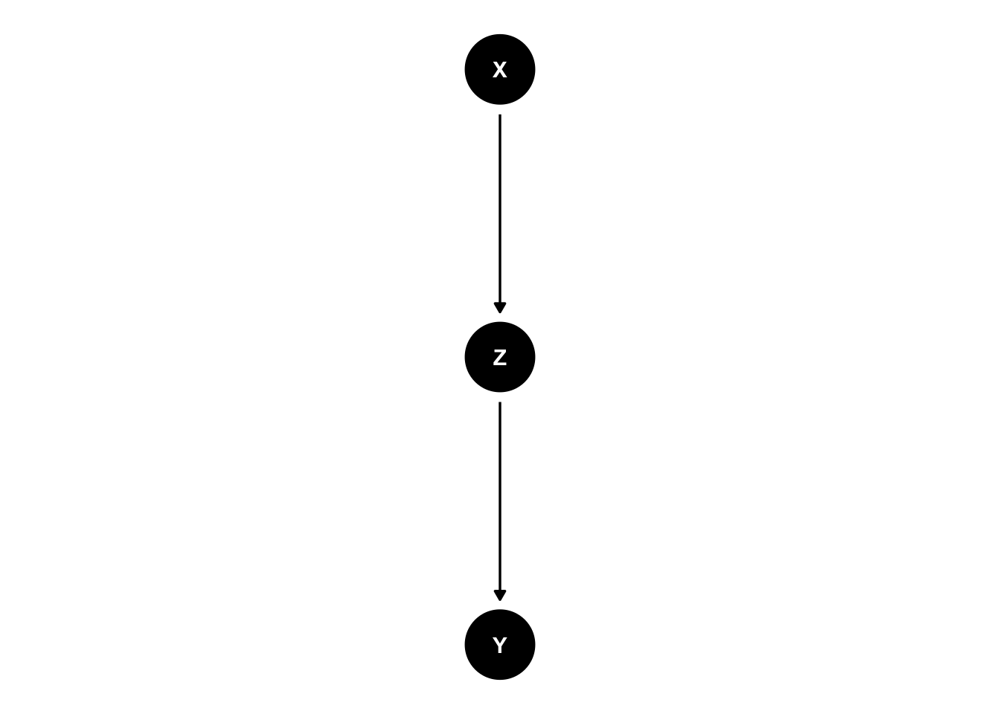
This R Markdown walks through a step-by-step workflow to build and interpret causal graphs in R:
dag_med <- dagitty("dag {
X -> Z -> Y
}")
ggdag(dag_med) + theme_dag()
# dagify version for better styling
dag_med <- dagify(
Z ~ X,
Y ~ Z,
exposure = "X",
outcome = "Y",
labels = c(X = "X", Y = "Y", Z = "Z")
)
# Add styling for better visualization
ggdag(dag_med, text = TRUE) +
geom_dag_edges(edge_width = 1.3) +
geom_dag_point(size = 11) +
geom_dag_text(color = "white", size = 5) +
theme_dag() +
theme(
plot.margin = margin(20, 20, 20, 20),
plot.title = element_text(face = "bold")
) +
ggtitle("Mediator: conditioning on Z blocks the path from X to Y")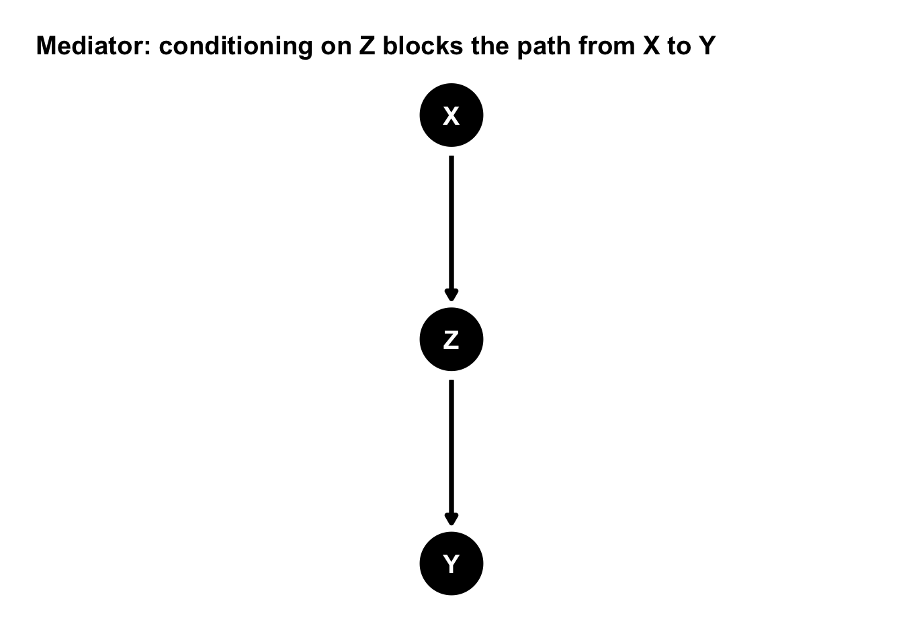
impliedConditionalIndependencies(dag_med)X _||_ Y | Z# Check d-separation explicitly:
dseparated(dag_med, "X", "Y") # FALSE (dependent)[1] FALSEdseparated(dag_med, "X", "Y", "Z") # TRUE (independent given Z)[1] TRUEPolicy training program (X) increases skills (Z), which increases wages (Y).
dag_confound <- dagitty("dag {
Z -> X
Z -> Y
}")
ggdag(dag_confound) + theme_dag()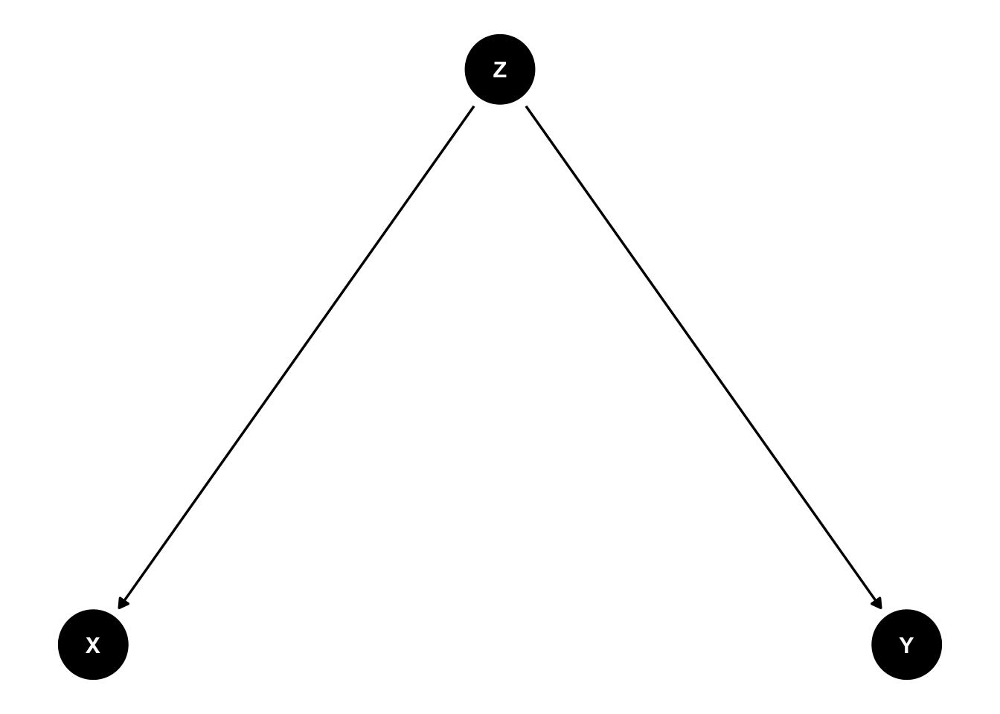
# dagify version for better styling
dag_confound <- dagify(
X ~ Z,
Y ~ Z,
exposure = "X",
outcome = "Y",
labels = c(X = "X", Y = "Y", Z = "Z")
)
# Add styling for better visualization
ggdag(dag_confound, text = TRUE) +
geom_dag_edges(edge_width = 1.3) +
geom_dag_point(size = 11) +
geom_dag_text(color = "white", size = 5) +
theme_dag() +
theme(
plot.margin = margin(20, 20, 20, 20),
plot.title = element_text(face = "bold")
) +
ggtitle("Confounder: conditioning on Z blocks the backdoor path between X and Y")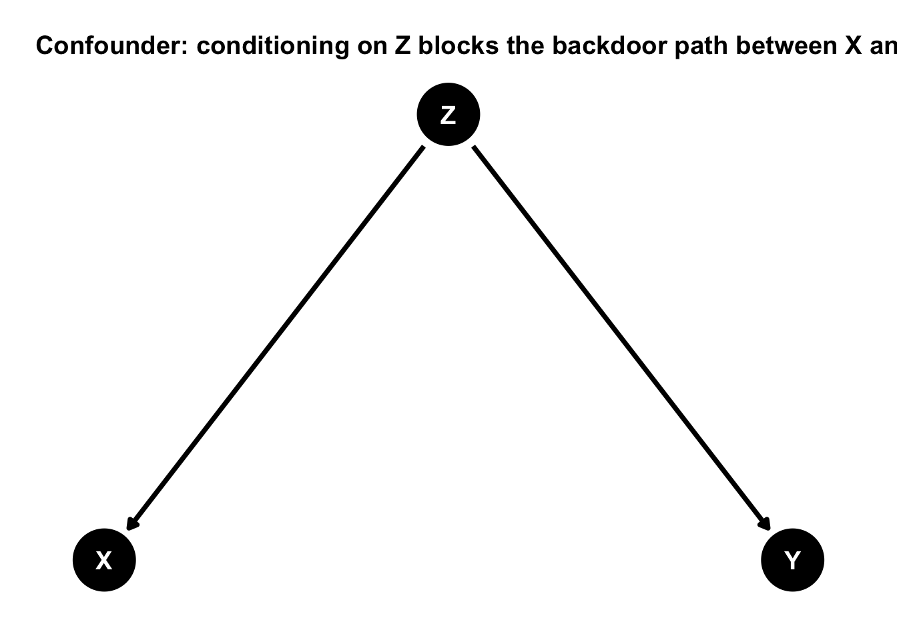
impliedConditionalIndependencies(dag_confound)X _||_ Y | Zdseparated(dag_confound, "X", "Y") # FALSE (dependent)[1] FALSEdseparated(dag_confound, "X", "Y", "Z") # TRUE (independent given Z)[1] TRUEggdag_adjustment_set(dag_confound, node_size = 20) +
theme_dag()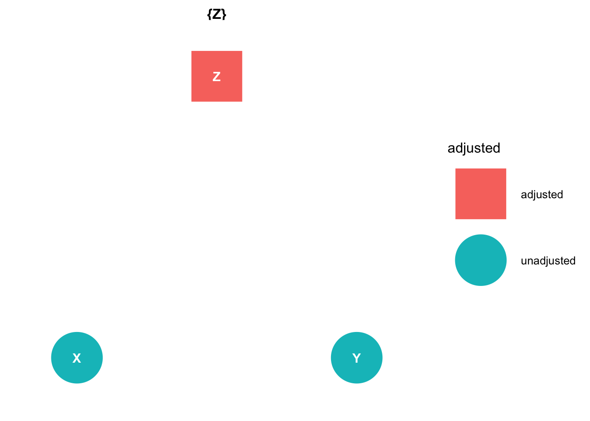
Coffee (X) and heart disease (Y) may look associated because smoking (Z) increases coffee consumption and heart disease.
dag_collider <- dagitty("dag {
X -> Z
Y -> Z
}")
ggdag(dag_collider) + theme_dag()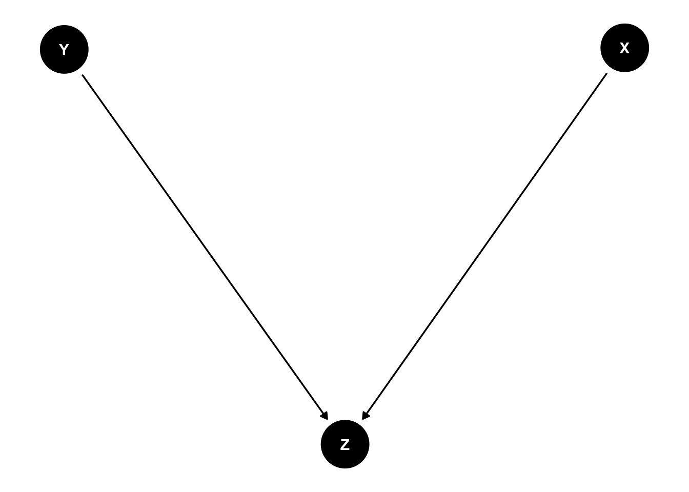
# dagify version for better styling
dag_collider <- dagify(
Z ~ X + Y,
exposure = "X",
outcome = "Y",
labels = c(X = "X", Y = "Y", Z = "Z")
)
# Add styling for better visualization
ggdag(dag_collider, text = TRUE) +
geom_dag_edges(edge_width = 1.3) +
geom_dag_point(size = 11) +
geom_dag_text(color = "white", size = 5) +
theme_dag() +
theme(
plot.margin = margin(20, 20, 20, 20),
plot.title = element_text(face = "bold")
) +
ggtitle("Collider: conditioning on Z opens association between X and Y")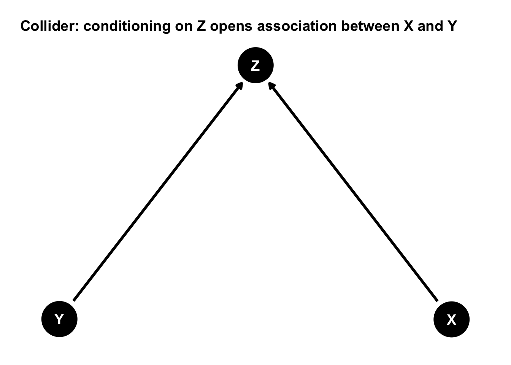
impliedConditionalIndependencies(dag_collider)X _||_ Ydseparated(dag_collider, "X", "Y") # TRUE (independent)[1] TRUEdseparated(dag_collider, "X", "Y", "Z") # FALSE (dependent given Z)[1] FALSETalent (X) and connections (Y) both increase the probability of being hired (Z).
A key workflow with DAGs is:
adjustmentSets() (backdoor) to propose controls.# In a chain, Z is not a valid adjustment set for the total effect of X on Y (it blocks the path).
adjustmentSets(dag_med, exposure = "X", outcome = "Y") {}# In a fork, Z is a valid adjustment set for the effect of X on Y.
adjustmentSets(dag_confound, exposure = "X", outcome = "Y"){ Z }# In a collider, there are no valid adjustment sets for the effect of X on Y (conditioning on Z creates bias).
adjustmentSets(dag_collider, exposure = "X", outcome = "Y") {}Here is a common “realistic” picture:
dag_complex1 <- dagitty("dag {
D -> M -> Y
U -> D
U -> Y
}")
ggdag(dag_complex1) + theme_dag()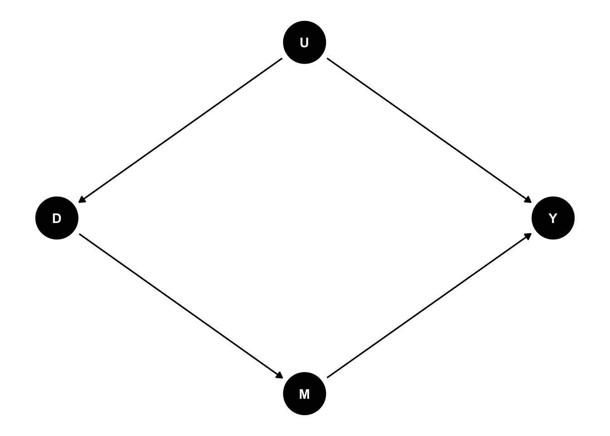
impliedConditionalIndependencies(dag_complex1)D _||_ Y | M, U
M _||_ U | DadjustmentSets(dag_complex1, exposure = "D", outcome = "Y"){ U }Interpretation
Note: controlling for the mediator M here does not solve confounding; it changes the estimand (direct effect) and may create additional bias depending on what else is in the system.
A frequent confusion:
That does not mean
D ⟂ Y | U,
because Y depends on D through the causal effect.
We can show this with a DAG:
# Causal effect: D -> M -> Y
# Confounder: U1 affects D and Y
# Upstream driver: U2 affects U1 and Y
dag_complex2 <- dagitty("dag {
D -> M -> Y
U1 -> D
U1 -> Y
U2 -> U1
U2 -> Y
}")
ggdag(dag_complex2) + theme_dag()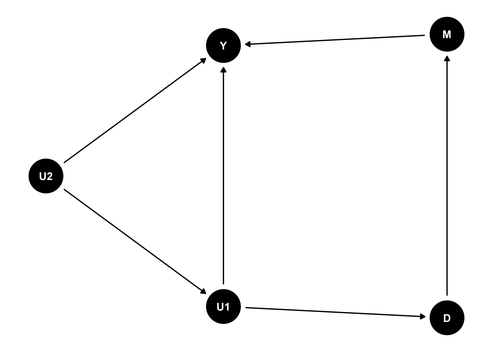
# dagify version for better styling
dag_complex2 <- dagify(
M ~ D,
Y ~ M + U1 + U2,
U1 ~ U2,
D ~ U1,
exposure = "D",
outcome = "Y",
labels = c(D = "D", M = "M", Y = "Y", U1 = "U1", U2 = "U2")
)
ggdag_adjustment_set(dag_complex2, node_size = 20) +
theme_dag()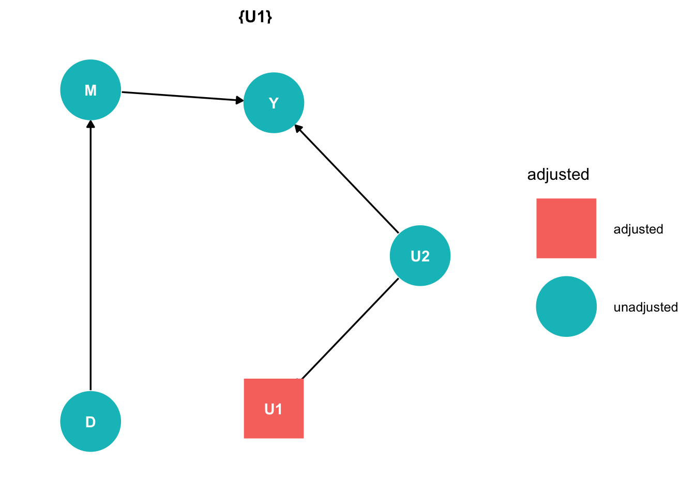
Even conditioning on U1, D is not d-separated from Y because the directed causal path remains.
impliedConditionalIndependencies(dag_complex2)D _||_ U2 | U1
D _||_ Y | M, U1
M _||_ U1 | D
M _||_ U2 | U1
M _||_ U2 | Ddseparated(dag_complex2, "D", "Y", "U1") # FALSE[1] FALSEdseparated(dag_complex2, "D", "Y", c("U1","M")) # TRUE (but note: conditioning on M changes estimand. To get the total effect, we would not condition on M.)[1] TRUEadjustmentSets(dag_complex2, exposure = "D", outcome = "Y") # U1 is a valid adjustment set for the total effect, but it does not make D and Y independent because of the causal path through M.{ U1 }Interpretation
Below is one realistic applied story (feel free to swap it for your own application).
dag_defor <- dagify(
M ~ D,
Y ~ M + U1 + U2,
D ~ U1 + U2,
exposure = "D",
outcome = "Y",
labels = c(D = "Land-tenure formalization (D)", M = "Perceived tenure security (M)", Y = "Deforestation rate (Y)", U1 = "Baseline accessibility (U1)", U2 = "Illicit market dynamics (U2)")
)
ggdag(dag_defor) + theme_dag()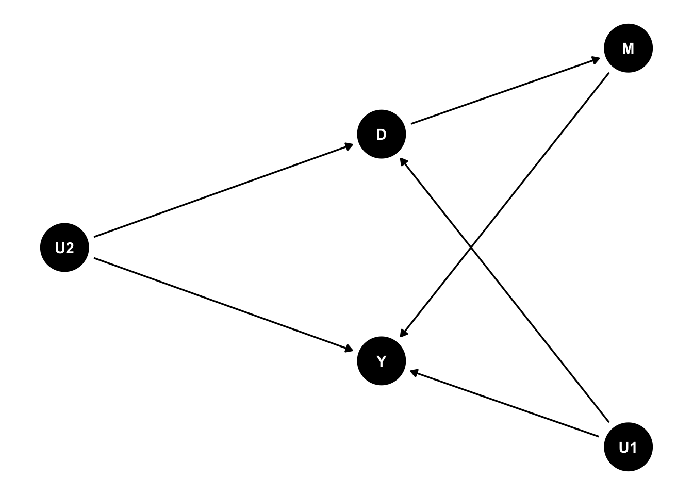
ggdag_adjustment_set(dag_defor, node_size = 20) +
theme_dag()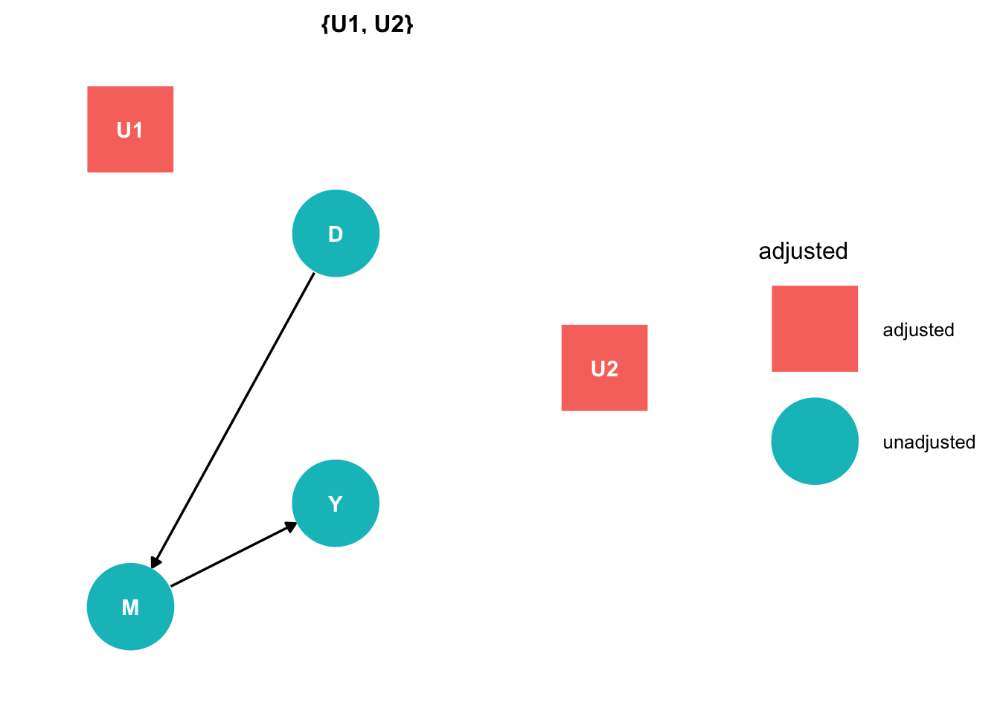
adjustmentSets(dag_defor, exposure = "D", outcome = "Y"){ U1, U2 }{U1, U2} would block backdoors.# 1) Write the DAG
# dag <- dagitty("dag { ... }")
# 2) dagify version for better styling
# dag <- dagify(
# ...,
# exposure = "X", # optional but helps with ggdag styling
# outcome = "Y",
# labels = c(X = "X", Y = "Y", Z = "Z") # optional but helps with ggdag styling
# )
# 3) Plot
# ggdag(dag, text = FALSE) + theme_dag()
# 4) See implied independencies
# impliedConditionalIndependencies(dag)
# 5) Find minimal backdoor adjustment sets
# adjustmentSets(dag, exposure = "X", outcome = "Y")
# 6) Visualize adjustment sets
# ggdag_adjustment_set(dag, node_size = 20) + theme_dag()
# 7) Test specific d-separation claims
# dseparated(dag, "X", "Y", "Z") # or conditioning set as a vector